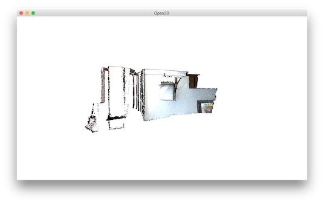
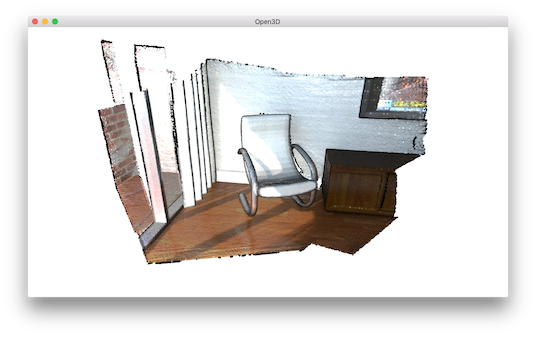
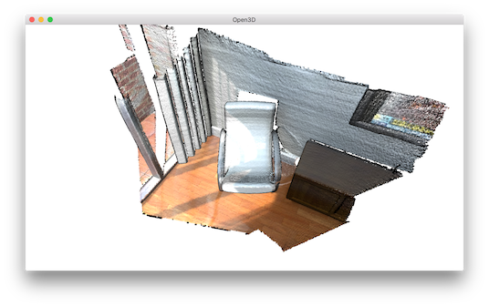
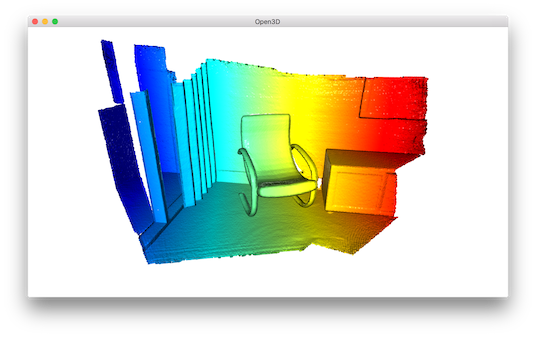
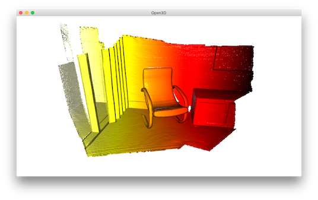

Note
This tutorial is generated from a Jupyter notebook that can be downloaded and run interactively.
Visualization#
Function draw_geometries#
CloudViewer provides a convenient visualization function draw_geometries which takes a list of geometry objects (ccPointCloud, ccMesh, or Image), and renders them together. We have implemented many functions in the visualizer, such as rotation, translation, and scaling via mouse operations, changing rendering style, and screen capture. Press H inside the window to print out a comprehensive list of functions.
[ ]:
print("Load a ply point cloud, print it, and render it")
sample_ply_data = cv3d.data.PLYPointCloud()
pcd = cv3d.io.read_point_cloud(sample_ply_data.path)
cv3d.visualization.draw_geometries([pcd],
zoom=0.3412,
front=[0.4257, -0.2125, -0.8795],
lookat=[2.6172, 2.0475, 1.532],
up=[-0.0694, -0.9768, 0.2024])
-- Mouse view control --
Left button + drag : Rotate.
Ctrl + left button + drag : Translate.
Wheel button + drag : Translate.
Shift + left button + drag : Roll.
Wheel : Zoom in/out.
-- Keyboard view control --
[/] : Increase/decrease field of view.
R : Reset view point.
Ctrl/Cmd + C : Copy current view status into the clipboard.
Ctrl/Cmd + V : Paste view status from clipboard.
-- General control --
Q, Esc : Exit window.
H : Print help message.
P, PrtScn : Take a screen capture.
D : Take a depth capture.
O : Take a capture of current rendering settings.
Note:
In some operating systems (e.g., macOS), the visualization window may not respond to keyboard input. This is usually because the console retains the input focus instead of passing it to the visualization window. Running with pythonw instead of python will resolve this issue.
Note:
In addition to draw_geometries, CloudViewer has a set of sibling functions with more advanced functionality. draw_geometries_with_custom_animation allows the programmer to define a custom view trajectory and play an animation in the GUI. draw_geometries_with_animation_callback and draw_geometries_with_key_callback accept Python callback functions as input. The callback function is called in an automatic animation loop, or upon a key press event. See Customized
visualization for details.
Store view point#
In the beginning, the point cloud is rendered upside down.

After adjusting view points using left-click + drag, we can reach a better view point.

To retain this view point, press Ctrl + C. The view point will be translated into a json string stored in clipboard. When you move the camera to a different view, such as:

You can get back to the original view by pressing Ctrl + V.
Rendering styles#
CloudViewer Visualizer supports several rendering styles. For example, pressing L will switch between a Phong lighting and a simple color rendering. Pressing 2 shows points colored based on their x-coordinate.

The color map can also be adjusted by, for example, pressing Shift + 4. This changes jet color map to hot color map.

Geometry primitives#
The code below generates a box, a sphere, and a cylinder using create_box, create_sphere, and create_cylinder. The box is painted in red, the sphere is painted in blue, and the cylinder is painted in green. Normals are computed for all meshes to support Phong shading (see Visualize 3D mesh and Surface normal estimation). We can even create a coordinate axis using create_mesh_coordinate_frame, with its
origin point set at (-2, -2, -2).
[ ]:
print("Let's define some primitives")
mesh_box = cv3d.geometry.ccMesh.create_box(width=1.0, height=1.0, depth=1.0)
mesh_box.compute_vertex_normals()
mesh_box.paint_uniform_color([0.9, 0.1, 0.1])
mesh_sphere = cv3d.geometry.ccMesh.create_sphere(radius=1.0)
mesh_sphere.compute_vertex_normals()
mesh_sphere.paint_uniform_color([0.1, 0.1, 0.7])
mesh_cylinder = cv3d.geometry.ccMesh.create_cylinder(radius=0.3, height=4.0)
mesh_cylinder.compute_vertex_normals()
mesh_cylinder.paint_uniform_color([0.1, 0.9, 0.1])
mesh_frame = cv3d.geometry.ccMesh.create_coordinate_frame(size=0.6,
origin=[-2, -2, -2])
draw_geometries takes a list of geometries and renders them all together. Alternatively, TriangleMesh supports a + operator to combine multiple meshes into one. We recommend the first approach since it supports a combination of different geometries (e.g., a mesh can be rendered in tandem with a point cloud).
[ ]:
print("We draw a few primitives using collection.")
cv3d.visualization.draw_geometries(
[mesh_box, mesh_sphere, mesh_cylinder, mesh_frame])
print("We draw a few primitives using + operator of mesh.")
cv3d.visualization.draw_geometries(
[mesh_box + mesh_sphere + mesh_cylinder + mesh_frame])
Draw line set#
To draw lines, it is necessary to define a LineSet with a set of points and a set of edges (pairs of point indices). The example below creates custom points and edges (denoted as lines) to make a box. Color is optional - red color [1,0,0] is assigned to each edge in this example.
[ ]:
print("Let's draw a box using cv3d.geometry.LineSet.")
points = [
[0, 0, 0],
[1, 0, 0],
[0, 1, 0],
[1, 1, 0],
[0, 0, 1],
[1, 0, 1],
[0, 1, 1],
[1, 1, 1],
]
lines = [
[0, 1],
[0, 2],
[1, 3],
[2, 3],
[4, 5],
[4, 6],
[5, 7],
[6, 7],
[0, 4],
[1, 5],
[2, 6],
[3, 7],
]
colors = [[1, 0, 0] for i in range(len(lines))]
line_set = cv3d.geometry.LineSet(
points=cv3d.utility.Vector3dVector(points),
lines=cv3d.utility.Vector2iVector(lines),
)
line_set.colors = cv3d.utility.Vector3dVector(colors)
cv3d.visualization.draw_geometries([line_set], zoom=0.8)